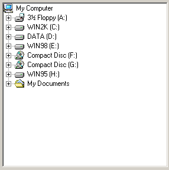

ExplorerTreeGadget()
Syntax
Result = ExplorerTreeGadget(#Gadget, x, y, Width, Height, Directory$, [, Flags])Description
Creates a tree listing of the directory tree just as Explorer does. It lets the user navigate through his file-system, and choose a file or folder.
Parameters
#Gadget A number to identify the new gadget. #PB_Any can be used to auto-generate this number. x, y, Width, Height The position and dimensions of the new gadget. Directory$ The directory that will be initially selected. It can include one or multiple patterns, like "C:\*.pb;*.pbi". If no pattern is included, the directory must end with a '\'. Including no directory will display the root containing the drives. Including no pattern defaults to '*.*'. So a Directory$ of "" will display the root and set '*.*' as pattern. Flags (optional) Flags to modify the gadget behavior. It can be a combination of the following values: #PB_Explorer_BorderLess : Create Gadget without borders. #PB_Explorer_AlwaysShowSelection : The selection is still visible, even when the gadget is not activated. #PB_Explorer_NoLines : Hide the little lines between each node. #PB_Explorer_NoButtons : Hide the '+' node buttons. #PB_Explorer_NoFiles : No files will be displayed. #PB_Explorer_NoDriveRequester : There will be no 'please insert drive X:' displayed. #PB_Explorer_NoMyDocuments : The 'My Documents' Folder will not be displayed as a separate item. #PB_Explorer_AutoSort : The content will be sorted automatically by name.
Return value
Returns nonzero on success and zero on failure. If #PB_Any was used as the #Gadget parameter then the return-value is the auto-generated gadget number on success.
Remarks
A 'mini help' can be added to this gadget using GadgetToolTip().
The following functions can be used to control the gadget:
- GetGadgetText(): Get the full path of the currently selected directory/file.
- SetGadgetText(): Set the currently selected file/directory.
- GetGadgetState(): Check if the selected item is a file or a directory.
This gadget supports the SetGadgetColor() and GetGadgetColor() functions with the following values as 'ColorType':#PB_Gadget_FrontColor: Textcolor #PB_Gadget_BackColor : Backgroundcolor #PB_Gadget_LineColor : Color for the lines and buttons if they are displayedExplorerTreeGadget() supports the following Events reported by EventType():#PB_EventType_Change : The selection has changed. #PB_EventType_LeftClick : User clicked on an item with the left mouse button. #PB_EventType_RightClick : User clicked on an item with the right mouse button. #PB_EventType_LeftDoubleClick : User double-clicked on an item with the left mouse button. #PB_EventType_RightDoubleClick : User double-clicked on an item with the right mouse button. #PB_EventType_DragStart : User tried to start a Drag & Drop operation.After a #PB_EventType_DragStart event, the Drag & Drop library can be used to start a Drag & Drop operation.
Example
If OpenWindow(0, 0, 0, 300, 300, "ExplorerTreeGadget", #PB_Window_SystemMenu | #PB_Window_ScreenCentered) ExplorerTreeGadget(0, 10, 10, 280, 280, "*.pb;*.pbi") Repeat : Until WaitWindowEvent() = #PB_Event_CloseWindow EndIf
See Also
GetGadgetText(), SetGadgetText(), GetGadgetState(), GetGadgetColor(), SetGadgetColor(), ExplorerComboGadget(), ExplorerListGadget(), TreeGadget()
Supported OS
All